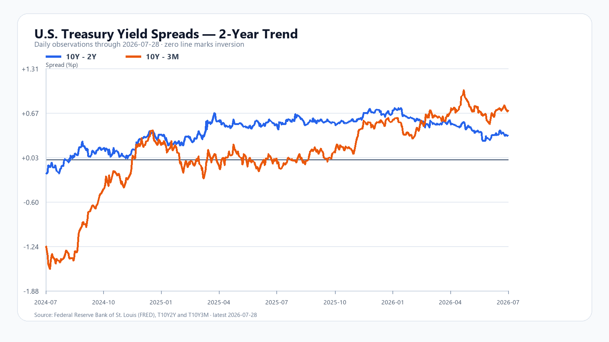

오전장 한 문장 요약
7월 29일 오전장은 외국인·기관·프로그램 순매수보다 SK하이닉스의 실적 발표 후 매도와 고변동성 포지션 축소가 가격에 더 강하게 작용한 장입니다.
KOSPI는 장중 6,228.52까지 올랐다가 5,840.19까지 밀렸습니다. 10시 48분에는 5,844.90으로 전일보다 2.97% 낮았습니다. 고점과 저점의 차이는 388.33포인트입니다. 단순한 약세장이 아니라 방향과 낙폭이 빠르게 바뀐 고변동성 장입니다.
달러/원은 10시 48분 1,456.05원으로 주식 변동성에 비해 안정적이었습니다. 따라서 현재까지는 외화 유동성이나 한국 신용의 위기보다 반도체 대형주와 ETF·파생 포지션에 집중된 주식시장 내부 충격으로 보는 편이 타당합니다.
수급 합계는 매수지만 가격은 약하다. 오늘 오전의 핵심은 이 모순입니다.
10시 48분 시장 대시보드
아래 수치는 KOSPI·KOSDAQ·주요 종목·환율의 10시 48분 기준 가격입니다.
| 항목 | 현재 | 시가 | 고가 | 저가 |
|---|---|---|---|---|
| 삼성전자 | 215,500원 | 226,500원 | 234,000원 | 215,000원 |
| SK하이닉스 | 1,443,000원 | 1,567,000원 | 1,619,000원 | 1,443,000원 |
| KODEX 레버리지 | 83,680원 | 92,015원 | 96,290원 | 83,665원 |
| USD/KRW | 1,456.05원 | 1,453.04원 | 1,458.22원 | 1,452.83원 |
장중 시세: 네이버 금융 KOSPI·KOSDAQ·삼성전자·SK하이닉스·KODEX 레버리지, 환율: Investing.com USD/KRW.
아침 전망에서 바뀐 점
오전 10시 2분 당시 기본 전망 범위는 6,050~6,220이었습니다. 외국인·기관·프로그램 매수와 안정된 환율이 지수 하단을 지지할 것으로 봤지만, 실제 장중 저가는 5,840.19였습니다. 예상보다 매도 압력이 훨씬 강했습니다.
| 10:02 판단 | 10:48 확인 | 평가 |
|---|---|---|
| 기본 범위 6,050~6,220 | 저가 5,840.19 | 하단 실패 |
| 외국인·기관 매수는 완충재 | 순매수 확대에도 6,000 이탈 | 가격 영향력 과대평가 |
| SK하이닉스 음전 해소가 핵심 | 고가 뒤 -3.68% | 약세 조건 발생 |
| 환율 안정 | 1,455원대 | 유효 |
수정된 해석은 분명합니다. 지금은 총수급의 방향보다 지수 비중이 큰 종목에 어느 가격에서 매물이 나오는가를 더 먼저 봐야 합니다.
외국인·기관이 사는데 지수가 하락한 이유
| 구분 | KOSPI | KOSDAQ |
|---|---|---|
| 개인 | -1조3,317억원 | +170억원 |
| 외국인 | +1,144억원 | +394억원 |
| 기관 | +1조2,196억원 | -630억원 |
| 프로그램 전체 | +4,047억원 | +375억원 |
| 상승 / 하락 | 316 / 577 | 326 / 1,358 |
KOSPI 하락 종목이 577개로 늘었고 삼성전자와 SK하이닉스가 모두 하락했습니다. KOSDAQ에서는 하락 종목이 1,358개로 압도적입니다. 대형 반도체와 중소형주의 동반 약세가 총수급의 긍정 효과를 상쇄했습니다.
현물 순매수에는 ETF 설정·환매, 지수 추종, 현·선물 차익거래, ADR과 서울 본주의 재배분이 섞일 수 있습니다. 따라서 외국인이나 기관이 순매수라는 사실만으로 방향성 매수라고 단정할 수 없습니다. 오늘 가격 행동은 매수의 질이 아직 약하다고 말합니다.
SK하이닉스: 사상 최대 실적과 주가 하락의 충돌
SK하이닉스 공식 2분기 실적은 강했습니다. 매출 79조3,187억원, 영업이익 60조5,426억원, 영업이익률 76%입니다. 전년 동기보다 매출은 257%, 영업이익은 557% 늘었습니다.
회사 설명에는 실물 수요를 뒷받침하는 내용도 있습니다. 약 10개 핵심 고객과 장기공급계약을 맺었고, 2분기 HBM4 양산 출하를 시작해 하반기에 생산을 늘릴 계획입니다. AI 전용 메모리뿐 아니라 일반 서버 메모리 수요도 확대되고 있다고 밝혔습니다.
그런데 주가는 1,619,000원까지 오른 뒤 1,443,000원으로 내려왔습니다. 이는 실적 악화보다 사상 최대 실적의 선반영, 미국 메모리주 급락, 2027~2028년 증설 우려, AI 투자수익률에 대한 시장의 요구, 고변동성 포지션 축소가 함께 만든 호재 소멸형 매도에 가깝습니다.
메모리 실물 수급은 아직 강하다
7월 28일 공개 가격에서 DDR5 16Gb 4800/5600은 50.933달러(+0.20%), DDR4 16Gb 3200은 85.000달러(+0.58%)였습니다. DDR5·DDR4가 동시에 오른 만큼 오늘 주가 하락을 메모리 현물가격 붕괴로 설명할 수는 없습니다.
| 품목 | 가격·변화 | 해석 |
|---|---|---|
| DDR5 16Gb 4800/5600 | 50.933달러 · +0.20% | 서버·AI 수요 지지 |
| DDR4 16Gb 3200 | 85.000달러 · +0.58% | 공급 재배치 영향 |
| 128Gb MLC NAND | 26.508달러 · +9.73% | 고신뢰성 제품 강세 |
| 512Gb TLC NAND | 18.931달러 · -1.28% | 소비자용 제품 혼조 |
HBM·서버 DRAM·고신뢰성 NAND는 강하고 소비자용 TLC는 상대적으로 약합니다. 실물시장은 제품별로 분리해서 봐야 합니다. 현재 주식시장은 오늘의 수요보다 미래 증설과 이익 증가율 둔화를 먼저 할인하고 있습니다.
출처: TrendForce DRAM 가격, NAND 가격. 공개 페이지의 갱신 주기와 시세 기준 시각은 품목별로 다를 수 있습니다.
미국 반도체의 선택적 급락
직전 미국장에서 QQQ는 0.97%, SOXX는 4.92%, SMH는 3.60% 하락했습니다. 개별 종목은 Nvidia +0.31%, AMD -7.53%, Micron -8.80%, SK하이닉스 ADR -8.98%였습니다.
Nvidia가 버티는 동안 AMD·Micron·SK하이닉스 ADR이 크게 내렸습니다. 이는 AI 수요 전체의 붕괴보다 메모리와 고변동성 반도체에 매도가 집중된 장으로 읽힙니다. 또한 ADR과 미국 상장 한국 ETF가 한국장의 이미 끝난 하락을 후행 반영한 부분은 다음 한국장 충격으로 다시 더하지 않았습니다.
환율은 안정, 미 국채 절대금리는 부담
달러/원은 1,456.05원으로 전일 종가보다 0.23% 높았습니다. 장중 범위도 1,452.83~1,458.22원에 머물렀습니다. 주식의 큰 왕복 변동에 비해 환율 반응은 제한적입니다.
FRED 7월 28일 확정치는 10년-2년 금리차 +0.35%포인트, 10년-3개월 +0.71%포인트입니다. 두 지표 모두 플러스지만, AI·반도체 밸류에이션에는 금리차보다 미국 10년물의 4.6%대 절대 수준이 더 직접적인 부담입니다.

출처: FRED 10Y-2Y, FRED 10Y-3M.
오늘 밤 경제 캘린더
| 시각 | 이벤트 | 시장 확인점 |
|---|---|---|
| 7월 30일 03:00 | FOMC 성명 | 인플레이션·추가 긴축 문구 |
| 03:30 | Fed 기자회견 | 유가·고용·금리 경로 |
| 05:30 | Meta 실적 콜 | 데이터센터 CAPEX |
| 06:30 | Microsoft 실적 콜 | Azure 성장과 AI 투자수익률 |
| 21:30 | 미국 2분기 GDP·6월 PCE | 성장과 물가의 조합 |
| 7월 31일 06:00 | Amazon 실적 콜 | AWS 성장과 AI CAPEX |
일정은 Federal Reserve, Microsoft, Meta, BEA, Amazon 공식 자료로 재확인했습니다.
오후장 조건부 시나리오
강세: 5,950~6,050 회복
KOSPI가 5,950을 회복한 뒤 6,000을 다시 시험하고, SK하이닉스가 1,480,000원 이상으로 올라서며, 외국인·기관·프로그램 순매수가 유지되는 경우입니다. 달러/원 1,460원 아래도 함께 확인합니다.
기본: 5,800~5,950 고변동성
외국인·기관 매수는 유지되지만 SK하이닉스와 코스닥 약세가 계속되는 경우입니다. 오전 저점 5,840과 5,900선을 반복해서 확인할 가능성이 높습니다.
약세: 5,650~5,800 재시험
KOSPI 5,840.19, SK하이닉스 1,443,000원, KODEX 레버리지 83,665원이 함께 이탈하고 프로그램 매수까지 꺾이는 경우입니다. 달러/원이 1,470원에 접근하면 내부 충격이라는 해석도 재검토해야 합니다.
현재 점수는 공격 15, 관망 60, 방어 25입니다. 많이 하락했다는 사실만으로 바닥을 확정하지 않습니다.
자주 묻는 질문
외국인과 기관이 순매수하는데 코스피는 왜 하락했나요?
지수 영향이 큰 SK하이닉스가 호실적 발표 뒤 하락했고 코스닥 시장 폭도 약했습니다. 전체 순매수 금액만으로는 종목별 매물과 파생 포지션 축소의 가격 충격을 설명할 수 없습니다.
SK하이닉스 실적이 좋은데 주가는 왜 내렸나요?
실적 악화보다 사상 최대 실적의 선반영, 미국 메모리주 급락, 미래 증설과 AI 투자수익률 우려, 최근 고변동성 포지션 축소가 함께 작용한 것으로 해석됩니다.
메모리 반도체 수급이 무너진 것인가요?
현재 공개된 DDR5·DDR4 현물가격과 SK하이닉스의 HBM4 출하 계획에는 수급 붕괴 신호가 없습니다. 주식시장은 현재 수요보다 미래 공급과 밸류에이션을 먼저 할인하고 있습니다.
오후장에서는 어떤 가격을 확인해야 하나요?
10시 48분 기준으로 KOSPI 5,840과 5,950, SK하이닉스 1,443,000원과 1,480,000원, KODEX 레버리지 83,665원, 달러/원 1,460원이 오후 흐름을 가를 주요 가격대입니다.
이 글은 공개 자료와 고정 시점 시세를 바탕으로 작성한 정보 자료입니다. 특정 상품의 매수·매도나 투자 성과를 보장하지 않습니다. 장중 수치와 수급은 마감 전 달라질 수 있습니다.